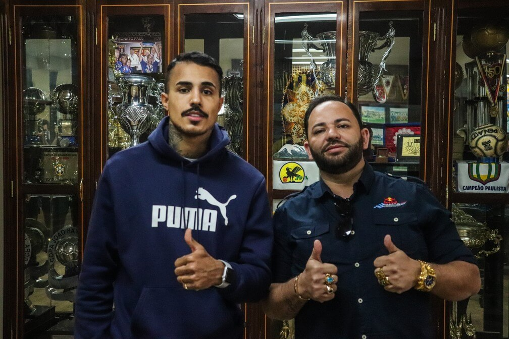

Post #1
O São Caetano acertou a contratação do cantor MC Livinho. Na próxima terça-feira, às 15h, no estádio Anacleto Campanella, o agora jogador será apresentado e assinará contrato válido até o fim desta temporada. MC Livinho é cantor renomado de funk, acumulando milhões de visualizações em plataformas de vídeos e música na internet. Na última semana, ele esteve reunido com a diretoria do clube paulista definindo os últimos detalhes da negociação para retornar ao futebol. Em contato com o ge, o CEO do São Caetano, Manoel Sabino Neto, confirmou a contratação do funkeiro.